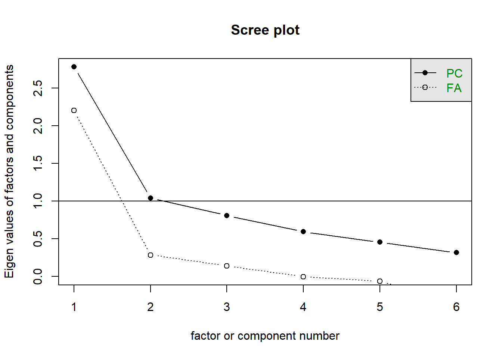

A researcher is interested in assessing if people who gamble will tend to lose more if they are more ‘impulsive’, and whether this might depend on whether they are gambling online or in a casino.
They recruited 482 participants (248 in a casino, and 234 on an online gambling site). Each participant filled out a 6 question measure of “impulsivity”, and then their total net gains (or losses) for the day were recorded (in £). All people were only playing the game BlackJack.
Our research question: does greater impulsivity lead to bigger losses when comparing online gamblers to casino gamblers?
Each row is a participant, for each person there are 6 columns all measuring the construct of “impulsivity”.
And for each of those columns, there’s a whole load of words in there!
Question 2
First things first, our questionnaire software has given us the responses all in the descriptors used for each point of the likert scale, which is a bit annoying.
Convert them all to numbers, which we can then work with.
Just looking at the impulsivity questions, create a correlation matrix of 6 variables.
What do you notice? Does it make sense given the wording of the questions?
Correlations are all positive except for those with Q5 and Q6. Q5 and Q6 are positively related, but they are negatively related to the other questions.
This makes sense given the way the questions are worded - if people are impulsive, they will be more likely to disagree to Q5 and Q6, but agree with the others:
qitems
[1] "I often act on the spur of the moment without thinking."
[2] "I find it hard to resist temptations."
[3] "I make decisions quickly, even when they have serious consequences."
[4] "I find it hard to stay focused on tasks that take a long time to finish."
[5] "I prefer safe activities rather than risky things just for fun."
[6] "I am usually patient and can wait for what I want."
Be careful!! if you have some code that reverse scores a question, and you run it twice, you will essentially reverse-reverse score the question, and it goes back to the original ordering!
Solution 4. There’s only 2, so let’s do this individually for each question:
Provide some descriptive statistics for the impulsivity scale scores of people at the two locations (online vs casino).
Hints
The describe() and describeBy() functions from the psych package can often pretty useful for this kind of thing. Alternatively, data |> group_by(...) |> summarise(....)!
Descriptive statistics by group
group: casino
vars n mean sd median trimmed mad min max range skew kurtosis se
X1 1 248 16.8 3.22 17 16.8 2.97 7 25 18 -0.11 -0.13 0.2
------------------------------------------------------------
group: online
vars n mean sd median trimmed mad min max range skew kurtosis se
X1 1 234 19.8 3.12 20 19.8 2.97 11 30 19 0.09 -0.06 0.2
Question 8
Does greater impulsivity lead to bigger losses when comparing online gamblers to casino gamblers?
Using the scale scores that you just computed, create a plot to show how impulsivity is associated with gains/losses of gamblers in the two places (casino vs online).
Solution 8. Something like this should do the trick:
Based on the plot in the previous question, if you fit the model lm(gain ~ impulsivity * online) to this data (where impulsivity is the scale score), what coefficients would the model estimate? would the sign of each coefficient be positive or negative?
Once you’ve made a good effort to predict the answers to these questions, fit the model and see if your predictions are borne out. (If your predictions are different from the outcomes, reflect on why the outcomes are the way they are.)
Solution 9. Here’s the model:
mod1 <-lm(gain ~ online * impulsivity, data = gdat)
It’s going to estimate 4 things:
tibble(estimate =c("intercept","onlineonline","impulsivity","onlineonline:impulsivity"),prediction =c("around zero/slightly negative","positive","negative","negative"),explanation =c("the 'online' variable is coded with casino as the reference level, so the intercept is going to be the height of the casino line where impulsivity is 0. so it looks like it will be around 0, or a bit below.","this coefficient will tell us the difference between casino and online when impulsivity is zero. the blue line in the plot is going to be higher than the red line when impulsivity is zero, so this coefficient will be positive","this is going to be how gains/losses change when impulsivity increases, specifically for the casino group. so in my plot it is the slope of the red line. it's going to be decreasing","this is going to be how the association between impulsivity and gains/losses changes when we move from casino to online. We know this association is negative in the casino group, and the online group looks like it is even more steeply downwards, so this is going to be a negative coefficient" )) |> gt::gt()
estimate
prediction
explanation
intercept
around zero/slightly negative
the 'online' variable is coded with casino as the reference level, so the intercept is going to be the height of the casino line where impulsivity is 0. so it looks like it will be around 0, or a bit below.
onlineonline
positive
this coefficient will tell us the difference between casino and online when impulsivity is zero. the blue line in the plot is going to be higher than the red line when impulsivity is zero, so this coefficient will be positive
impulsivity
negative
this is going to be how gains/losses change when impulsivity increases, specifically for the casino group. so in my plot it is the slope of the red line. it's going to be decreasing
onlineonline:impulsivity
negative
this is going to be how the association between impulsivity and gains/losses changes when we move from casino to online. We know this association is negative in the casino group, and the online group looks like it is even more steeply downwards, so this is going to be a negative coefficient
Take a look again at the wordings of the questions on impulsivity. Do you think they equally represent the construct of ‘impulsivity’?
variable
description
imp_1
I often act on the spur of the moment without thinking.
imp_2
I find it hard to resist temptations.
imp_3
I make decisions quickly, even when they have serious consequences.
imp_4
I find it hard to stay focused on tasks that take a long time to finish.
imp_5
I prefer safe activities rather than risky things just for fun.
imp_6
I am usually patient and can wait for what I want.
Hints
This is a very subjective question. “Impulsivity” will mean subtly different things to each one of us. The idea is that we want to get at whatever idea it is that is shared across us when we use this word. To me, one of these questions feels a little less closely linked to being an ‘impulsive’ behaviour than the others.
Solution 10. I’m going to rank them in order of how much I think each question captures “impulsivity” to me.
I hope that some of you disagree with me about this ranking - that’s what makes measurement frustrating fun!
variable
description
my_thoughts
imp_1
I often act on the spur of the moment without thinking.
clearly impulsivity
imp_3
I make decisions quickly, even when they have serious consequences.
could be impulsivity, could be that you're really good at making decisions
imp_6
I am usually patient and can wait for what I want.
similar to the one below, impatience and impulsivity kind of go hand in hand, but this is not quite so clearly the definition of impulsivity as the first two
imp_2
I find it hard to resist temptations.
'temptations' here makes me immediately think of edible temptations! which is one manifestation of impulsivity i guess!
imp_5
I prefer safe activities rather than risky things just for fun.
is risk taking the same as impulsivity? you can take calculated risks? people do 'risky' sports like climbing for fun, but not out of impulsivity?
imp_4
I find it hard to stay focused on tasks that take a long time to finish.
this doesn't really feel like it is as clearly impulsivity. lots of things can distract us from tasks. boredom?
Question 11
Okay, so if we’re not very happy that our 6 questions are equally representative of “impulsivity” (or maybe groups of questions capture different distinct aspects of the construct?), what are we going to do?
Let’s start by doing a Principal Component Analysis (PCA) on the 6 items, and extracting 6 components.
Principal Components Analysis
Call: principal(r = gdat[, 2:7], nfactors = 6, rotate = "none")
Standardized loadings (pattern matrix) based upon correlation matrix
PC1 PC2 PC3 PC4 PC5 PC6 h2 u2 com
imp_1 0.78 -0.38 -0.09 0.10 -0.32 0.35 1 -4.4e-16 2.4
imp_2 0.66 0.16 -0.66 0.19 -0.08 -0.26 1 -1.1e-15 2.6
imp_3 0.76 -0.31 -0.07 -0.16 0.54 0.06 1 -8.9e-16 2.3
imp_4 0.41 0.87 0.04 0.07 0.10 0.24 1 5.6e-16 1.7
imp_5 0.67 -0.05 0.56 0.45 0.01 -0.19 1 -1.1e-15 2.9
imp_6 0.73 0.14 0.23 -0.56 -0.22 -0.17 1 -4.4e-16 2.5
PC1 PC2 PC3 PC4 PC5 PC6
SS loadings 2.78 1.04 0.81 0.59 0.46 0.32
Proportion Var 0.46 0.17 0.14 0.10 0.08 0.05
Cumulative Var 0.46 0.64 0.77 0.87 0.95 1.00
Proportion Explained 0.46 0.17 0.14 0.10 0.08 0.05
Cumulative Proportion 0.46 0.64 0.77 0.87 0.95 1.00
Mean item complexity = 2.4
Test of the hypothesis that 6 components are sufficient.
The root mean square of the residuals (RMSR) is 0
with the empirical chi square 0 with prob < NA
Fit based upon off diagonal values = 1
Question 12
Take a look at the ‘variance accounted for’ by each component (you could use a scree plot to show this too!), and think back to our research question, which has absolutely nothing to do with whether “impulsivity” is one thing, or two things, or 6 things…
How many components do you want to keep?
Solution 12. Our research question, remember is asking “does greater impulsivity lead to bigger losses when comparing online gamblers to casino gamblers?”
We’re getting bogged down in the weeds of what do we even mean by ‘impulsivity’?? I would make a case that our research question kind of pre-supposes that “impulsivity” is just one thing. If we reduce these 6 questions down to two or more things, then our research question becomes a little bit more complex to answer, with lots of nuance about what sort of impulsivity we’re talking about. So from a purely pragmatic standpoint, I am really hoping we can just keep one thing, and call that thing “impulsivity”!
As it stands, the scree plot is in our favour. It shows a kink (or ‘elbow’, if you’d prefer) at 2 components, suggesting that we would be fine to keep just one.
scree(gdat[,2:7])

The numbers going into the scree plot are shown in the ‘variance accounted for’ bit of the PCA. These tell us that if we keep just one component, then we are capturing 47% of the variability in the questionnaire. If we kept two, then we would capture 64%, 3 would capture 77%, and so on, until we just keep 6 and we’re capturing 100%.
There’s no “right” answer here as to how much we should keep. 47% makes it feel like we’re losing more than we’re capturing (which we are), but that might just be what we have to do!
Question 13
Extract the scores for the first principal component, and attach them to your dataset as a new set of scores for “impulsivity”.
Attend also to the loadings for that first component - is it related more to the questions you felt were more clearly asked about ‘impulsivity’?
Solution 13. Here are the scores added to our data:
gdat$pc1 <- imppca$scores[,1]
And here are the loadings for that first component. It’s less related to imp_4 and imp_2, and more related to imp_1 and imp_3 (this kind of fits in with my view that these two questions are more obviously asking about “impulsivity” to me).
Forgetting about your scale scores, make a new plot using the PCA scores instead, and re-fit the linear model you fitted earlier using these new scores. What changes?
Solution 14. There’s much more variability in the pc1 values than the scale score values. This makes sense, because if the principal component scores are some weighting of each variable, then we’re going to end up with far more possible scores.
Note that the better measurement of “impulsivity” by the PCA (weighting our scores more towards imp_1 and imp_3) results in a significant interaction here.
It’s also worth noting that the online [online] coefficient is also significant, but that is because the PCA scores are standardised, whereas the scale scores are not. So “0” means something very different on those two measures.
mod2 <-lm(gain ~ online * pc1, data = gdat)sjPlot::tab_model(mod1, mod2)